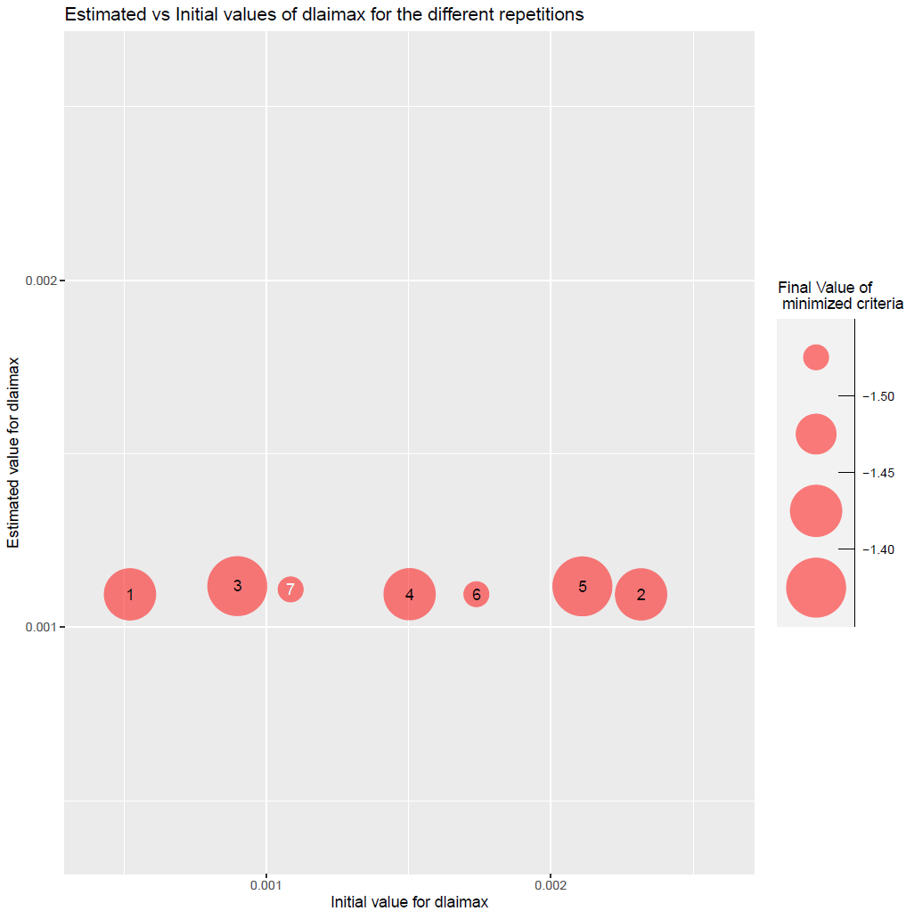
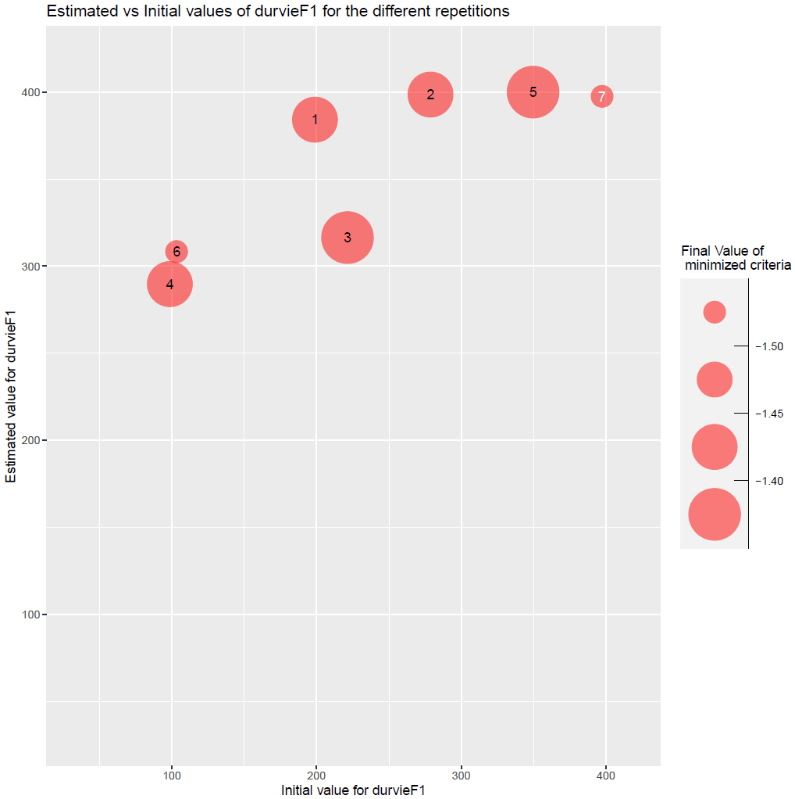
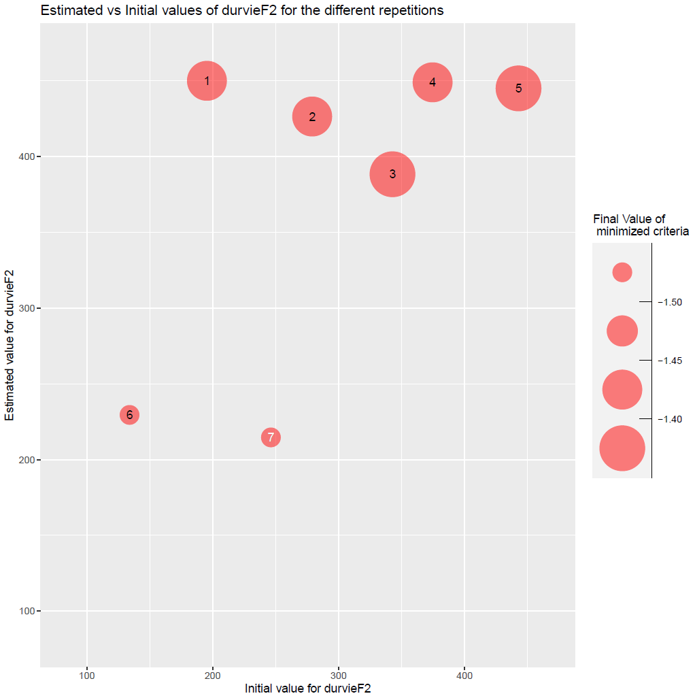

vignettes/Parameter_estimation_Specific_and_Varietal.Rmd
Parameter_estimation_Specific_and_Varietal.RmdThis document presents an example of a simultaneous estimation of one specific and one varietal parameter on a multi-varietal dataset using the STICS model, while a simpler introductory example is presented in this vignette (you should look at it first).
Important: CroptimizR can be applied to any crop model, provided that a suitable wrapper is available. To use the feature illustrated in this vignette, the model wrapper must be able to handle the
param_valuesargument as atibblewith asituationcolumn identifying the situations, allowing parameter values to differ across situations. This requirement is fulfilled by the STICS wrapper (seeSticsOnR::stics_wrapper). If you are using another wrapper, make sure that it supports this interface. Guidelines and examples for implementing such wrappers are provided in the Designing_a_model_wrapper vignette.
Data comes from a maize crop experiment (see description in Wallach et al., 2011). In this example, 8 situations (USMs in Stics language) will be used for the parameter estimation. This test case correspond to case 1c in (Wallach et al., 2011).
The parameter estimation is performed using the Nelder-Mead simplex method implemented in the nloptr package.
This part is not shown here, it is the same as this of the introductory example.
In this example, observed LAI are used for all USMs for which there
is an observation file in javastics_workspace_path
folder.
# Read observation files
obs_list <- get_obs(javastics_workspace_path)
obs_list <-
filter_obs(
obs_list,
var = c("lai_n"),
include = TRUE
)param_info allows handling specific / varietal
parameters (dlaimax vs durvieF parameters in this example):
dlaimax is defined to take the same value for all situations, whereas
durvieF is defined in such a way that it may take one value for
situations c("bo96iN+", "lu96iN+", "lu96iN6", "lu97iN+"),
that correspond to a given variety, and another for situations
c("bou99t3", "bou00t3", "bou99t1", "bou00t1"), that
correspond to another variety, sit_list being in this case
a list of size 2 (see code below). Please note that bounds can take
different values for the different groups of situations (lb and ub are
vectors of size 2 for durvieF).
param_info <- list()
param_info$dlaimax <-
list(
sit_list =
list(
c(
"bou99t3",
"bou00t3",
"bou99t1",
"bou00t1",
"bo96iN+",
"lu96iN+",
"lu96iN6",
"lu97iN+"
)
),
lb = 0.0005,
ub = 0.0025
)
param_info$durvieF <- list(
sit_list =
list(
c("bo96iN+", "lu96iN+", "lu96iN6", "lu97iN+"),
c("bou99t3", "bou00t3", "bou99t1", "bou00t1")
),
lb = c(50, 100),
ub = c(400, 450)
)
model_options <-
stics_wrapper_options(
javastics = javastics_path,
workspace = stics_inputs_path,
parallel = TRUE
)
optim_options <- list()
optim_options$nb_rep <- 7 # Number of repetitions of the minimization
# (each time starting with different initial
# values for the estimated parameters)
optim_options$maxeval <- 1000 # Maximum number of evaluations of the
# minimized criteria
optim_options$xtol_rel <- 1e-04 # Tolerance criterion between two iterations
# (threshold for the relative difference of
# parameter values between the 2 previous
# iterations)
optim_options$ranseed <- 1234 # random seedThe optimization is performed here with the Nelder-Mead simplex
method and crit_log_cwss criterion that are the default
values in the estim_param function for the
optim_method and crit_function arguments.
res <- estim_param(
obs_list = obs_list,
model_function = stics_wrapper,
model_options = model_options,
optim_options = optim_options,
param_info = param_info,
out_dir = data_dir # path where to store the results
)The estimated values of the parameters are the following:
res$final_values## dlaimax durvieF1 durvieF2
## 1.108991e-03 3.975518e+02 2.146185e+02The EstimatedVSinit.pdf file contains the following figures:

Figure 1: plots of estimated vs initial values of parameters dlaimax and durvieF (estimated for both varieties).
A piece of code to run the model with the values of the parameters before and after the optimization and to create a couple of plots using the CroPlotR package to check if the calibration reduced the difference between simulations and observations:
# Run the model without and with forcing the optimized values of the parameters
sim_before_optim <- stics_wrapper(model_options = model_options)
sim_after_optim <- stics_wrapper(
param_values = res$final_values,
model_options = model_options
)
stats <- summary(sim_before_optim$sim_list, obs = obs_list)
p <- plot(
sim_before_optim$sim_list,
obs = obs_list,
type = "scatter",
all_situations = TRUE
)
p1 <-
p[[1]] +
labs(
title =
paste(
"Before Optimization, \n RMSE=",
round(stats$RMSE, digits = 2)
)
) +
theme(plot.title = element_text(size = 9, hjust = 0.5))
stats <- summary(sim_after_optim$sim_list, obs = obs_list)
p <-
plot(
sim_after_optim$sim_list,
obs = obs_list,
type = "scatter",
all_situations = TRUE
)
p2 <-
p[[1]] +
labs(
title =
paste(
"After Optimization, \n RMSE=",
round(stats$RMSE, digits = 2)
)
) +
theme(plot.title = element_text(size = 9, hjust = 0.5))
p <- grid.arrange(grobs = list(p1, p2), nrow = 1, ncol = 2)
# Save the graph
ggsave(
file.path(
data_dir,
paste0("sim_obs", ".png")
),
plot = p
)This gives:
Figure 2: plots of simulated vs observed LAI before and after optimization. The gap between simulated and observed values has been drastically reduced: the minimizer has done its job!